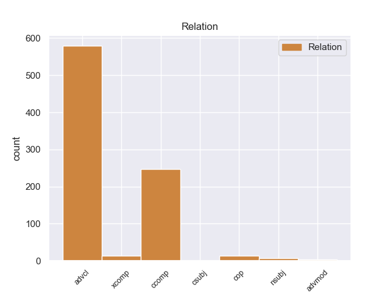
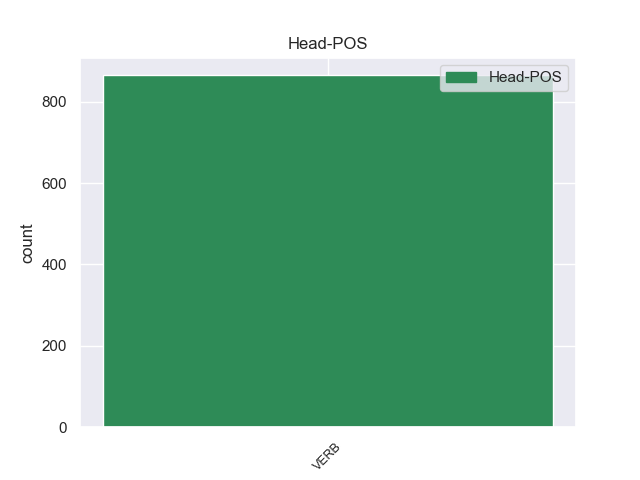
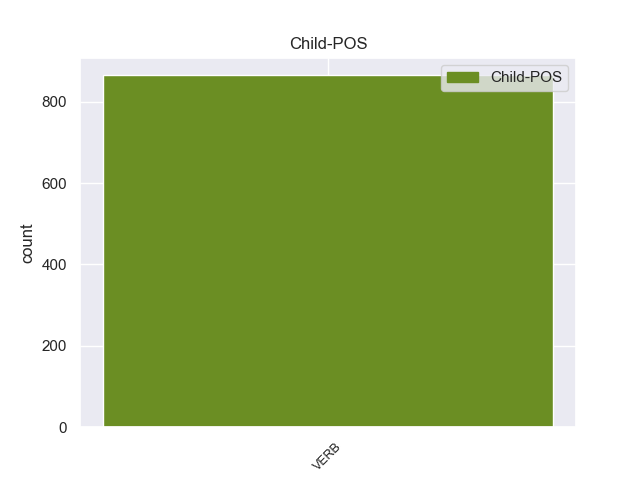

Distribution of features within this leaf



Agreement Rules sorted by frequency.
- When the dependent token is the adverbial clause modifier(advcl) of the head token, and the head token is VERB and the dependent token is VERB.
1 από _ _ _ _ 0 _ _ _
2 τα _ _ _ _ 0 _ _ _
3 δε _ _ _ _ 0 _ _ _
4 έγγραφα _ _ _ _ 0 _ _ _
5 της _ _ _ _ 0 _ _ _
6 υπόθεσης _ _ _ _ 0 _ _ _
7 προκύπτει _ _ _ _ 0 _ _ _
8 ότι _ _ _ _ 0 _ _ _
9 δεν _ _ _ _ 0 _ _ _
10 φαίνεται _ _ _ _ 0 _ _ _
11 να _ _ _ _ 0 _ _ _
12 έχει _ _ _ _ 0 _ _ _
13 ληφθεί ληφθεί VERB _ Aspect=Imp|Mood=Ind|Number=Sing|Person=3|Tense=Pres|VerbForm=Fin|Voice=Act 0 _ _ _
14 υπόψη _ _ _ _ 0 _ _ _
15 η _ _ _ _ 0 _ _ _
16 σύσταση _ _ _ _ 0 _ _ _
17 να _ _ _ _ 0 _ _ _
18 διαβιβαστεί διαβιβαστεί VERB _ Aspect=Imp|Mood=Ind|Number=Sing|Person=3|Tense=Pres|VerbForm=Fin|Voice=Act 13 advcl _ _
19 η _ _ _ _ 0 _ _ _
20 αίτηση _ _ _ _ 0 _ _ _
21 άρσης _ _ _ _ 0 _ _ _
22 της _ _ _ _ 0 _ _ _
23 ασυλίας _ _ _ _ 0 _ _ _
24 μόνον _ _ _ _ 0 _ _ _
25 επί _ _ _ _ 0 _ _ _
26 τη _ _ _ _ 0 _ _ _
27 βάσει _ _ _ _ 0 _ _ _
28 ακριβέστερου _ _ _ _ 0 _ _ _
29 προσδιορισμού _ _ _ _ 0 _ _ _
30 όσον _ _ _ _ 0 _ _ _
31 αφορά _ _ _ _ 0 _ _ _
32 τους _ _ _ _ 0 _ _ _
33 τόπους _ _ _ _ 0 _ _ _
34 και _ _ _ _ 0 _ _ _
35 τα _ _ _ _ 0 _ _ _
36 πρόσωπα _ _ _ _ 0 _ _ _
37 που _ _ _ _ 0 _ _ _
38 εμπλέκονται _ _ _ _ 0 _ _ _
39 σ _ _ _ _ 0 _ _ _
40 την _ _ _ _ 0 _ _ _
41 υπόθεση _ _ _ _ 0 _ _ _
42 . _ _ _ _ 0 _ _ _
1 Ευελπιστώ ευελπιστώ VERB _ Aspect=Imp|Mood=Ind|Number=Sing|Person=1|Tense=Pres|VerbForm=Fin|Voice=Act 0 _ _ _
2 ότι _ _ _ _ 0 _ _ _
3 η _ _ _ _ 0 _ _ _
4 απόφαση _ _ _ _ 0 _ _ _
5 αυτή _ _ _ _ 0 _ _ _
6 , _ _ _ _ 0 _ _ _
7 συμπεριλαμβανομένης _ _ _ _ 0 _ _ _
8 και _ _ _ _ 0 _ _ _
9 της _ _ _ _ 0 _ _ _
10 αιτιολογικής _ _ _ _ 0 _ _ _
11 έκθεσης _ _ _ _ 0 _ _ _
12 που _ _ _ _ 0 _ _ _
13 την _ _ _ _ 0 _ _ _
14 συνοδεύει _ _ _ _ 0 _ _ _
15 , _ _ _ _ 0 _ _ _
16 θα _ _ _ _ 0 _ _ _
17 διαβιβαστεί διαβιβαστεί VERB _ Aspect=Imp|Mood=Ind|Number=Sing|Person=3|Tense=Pres|VerbForm=Fin|Voice=Act 1 ccomp _ _
18 σ _ _ _ _ 0 _ _ _
19 τις _ _ _ _ 0 _ _ _
20 γαλλικές _ _ _ _ 0 _ _ _
21 αρχές _ _ _ _ 0 _ _ _
22 , _ _ _ _ 0 _ _ _
23 εφόσον _ _ _ _ 0 _ _ _
24 υπερψηφιστεί _ _ _ _ 0 _ _ _
25 από _ _ _ _ 0 _ _ _
26 το _ _ _ _ 0 _ _ _
27 Κοινοβούλιο _ _ _ _ 0 _ _ _
28 . _ _ _ _ 0 _ _ _
1 Δεν _ _ _ _ 0 _ _ _
2 πιστεύω πιστεύω VERB _ Aspect=Imp|Mood=Ind|Number=Sing|Person=3|Tense=Pres|VerbForm=Fin|Voice=Act 0 _ _ _
3 να _ _ _ _ 0 _ _ _
4 υπάρχουν υπάρχουν VERB _ Aspect=Imp|Mood=Ind|Number=Plur|Person=3|Tense=Pres|VerbForm=Fin|Voice=Pass 2 cop _ _
5 πολλοί _ _ _ _ 0 _ _ _
6 άλλοι _ _ _ _ 0 _ _ _
7 συνομιλητές _ _ _ _ 0 _ _ _
8 από _ _ _ _ 0 _ _ _
9 την _ _ _ _ 0 _ _ _
10 πλευρά _ _ _ _ 0 _ _ _
11 των _ _ _ _ 0 _ _ _
12 Παλαιστινίων _ _ _ _ 0 _ _ _
13 . _ _ _ _ 0 _ _ _
1 Οι _ _ _ _ 0 _ _ _
2 κρατούμενοι _ _ _ _ 0 _ _ _
3 έδωσαν _ _ _ _ 0 _ _ _
4 σ _ _ _ _ 0 _ _ _
5 τους _ _ _ _ 0 _ _ _
6 δεσμοφύλακες _ _ _ _ 0 _ _ _
7 χουρμάδες _ _ _ _ 0 _ _ _
8 με _ _ _ _ 0 _ _ _
9 υπνωτικό _ _ _ _ 0 _ _ _
10 και _ _ _ _ 0 _ _ _
11 όταν _ _ _ _ 0 _ _ _
12 οι _ _ _ _ 0 _ _ _
13 τελευταίοι _ _ _ _ 0 _ _ _
14 αποκοιμήθηκαν αποκοιμήθηκαν VERB _ Aspect=Perf|Mood=Ind|Number=Plur|Person=3|Tense=Past|VerbForm=Fin|Voice=Act 15 xcomp _ _
15 κατάφεραν κατάφεραν VERB _ Aspect=Perf|Mood=Ind|Number=Plur|Person=3|Tense=Past|VerbForm=Fin|Voice=Act 0 _ _ _
16 να _ _ _ _ 0 _ _ _
17 αποδράσουν _ _ _ _ 0 _ _ _
18 . _ _ _ _ 0 _ _ _
1 Κύριε _ _ _ _ 0 _ _ _
2 Πρόεδρε πρόεδρε VERB _ Aspect=Imp|Mood=Ind|Number=Sing|Person=1|Tense=Pres|VerbForm=Fin|Voice=Act 5 nsubj _ _
3 , _ _ _ _ 0 _ _ _
4 σας _ _ _ _ 0 _ _ _
5 είμαι είμαι VERB _ Aspect=Imp|Mood=Ind|Number=Sing|Person=1|Tense=Pres|VerbForm=Fin|Voice=Act 0 _ _ _
6 εξαιρετικά _ _ _ _ 0 _ _ _
7 ευγνώμων _ _ _ _ 0 _ _ _
8 για _ _ _ _ 0 _ _ _
9 το _ _ _ _ 0 _ _ _
10 ότι _ _ _ _ 0 _ _ _
11 ταχθήκατε _ _ _ _ 0 _ _ _
12 υπέρ _ _ _ _ 0 _ _ _
13 της _ _ _ _ 0 _ _ _
14 πρότασης _ _ _ _ 0 _ _ _
15 να _ _ _ _ 0 _ _ _
16 προσκαλέσουμε _ _ _ _ 0 _ _ _
17 σ _ _ _ _ 0 _ _ _
18 το _ _ _ _ 0 _ _ _
19 Ευρωπαϊκό _ _ _ _ 0 _ _ _
20 Κοινοβούλιο _ _ _ _ 0 _ _ _
21 , _ _ _ _ 0 _ _ _
22 σ _ _ _ _ 0 _ _ _
23 τις _ _ _ _ 0 _ _ _
24 Ομάδες _ _ _ _ 0 _ _ _
25 μας _ _ _ _ 0 _ _ _
26 , _ _ _ _ 0 _ _ _
27 παρατηρητές _ _ _ _ 0 _ _ _
28 από _ _ _ _ 0 _ _ _
29 τις _ _ _ _ 0 _ _ _
30 υποψήφιες _ _ _ _ 0 _ _ _
31 για _ _ _ _ 0 _ _ _
32 ένταξη _ _ _ _ 0 _ _ _
33 χώρες _ _ _ _ 0 _ _ _
34 μετά _ _ _ _ 0 _ _ _
35 από _ _ _ _ 0 _ _ _
36 την _ _ _ _ 0 _ _ _
37 υπογραφή _ _ _ _ 0 _ _ _
38 των _ _ _ _ 0 _ _ _
39 συνθηκών _ _ _ _ 0 _ _ _
40 . _ _ _ _ 0 _ _ _
1 Ας _ _ _ _ 0 _ _ _
2 είμαστε είμαστε VERB _ Aspect=Imp|Mood=Ind|Number=Sing|Person=1|Tense=Pres|VerbForm=Fin|Voice=Act 0 _ _ _
3 όμως _ _ _ _ 0 _ _ _
4 ειλικρινείς _ _ _ _ 0 _ _ _
5 - _ _ _ _ 0 _ _ _
6 η _ _ _ _ 0 _ _ _
7 αύξηση _ _ _ _ 0 _ _ _
8 αυτή _ _ _ _ 0 _ _ _
9 δεν _ _ _ _ 0 _ _ _
10 είναι _ _ _ _ 0 _ _ _
11 αρκετή αρκετή VERB _ Aspect=Imp|Mood=Ind|Number=Sing|Person=3|Tense=Pres|VerbForm=Fin|Voice=Act 2 advmod _ _
12 . _ _ _ _ 0 _ _ _
1 Μπορεί μπορώ VERB VERB Aspect=Imp|Mood=Ind|Number=Sing|Person=3|Tense=Pres|VerbForm=Fin|Voice=Act 0 _ _ _
2 να _ _ _ _ 0 _ _ _
3 θέλουμε θέλω VERB VERB Aspect=Imp|Mood=Ind|Number=Plur|Person=1|Tense=Pres|VerbForm=Fin|Voice=Act 1 csubj _ _
4 να _ _ _ _ 0 _ _ _
5 αυξήσουμε _ _ _ _ 0 _ _ _
6 τις _ _ _ _ 0 _ _ _
7 κοινωνικές _ _ _ _ 0 _ _ _
8 του _ _ _ _ 0 _ _ _
9 επιβαρύνσεις _ _ _ _ 0 _ _ _
10 - _ _ _ _ 0 _ _ _
11 και _ _ _ _ 0 _ _ _
12 πολλοί _ _ _ _ 0 _ _ _
13 συνάδελφοι _ _ _ _ 0 _ _ _
14 εδώ _ _ _ _ 0 _ _ _
15 θα _ _ _ _ 0 _ _ _
16 ήθελαν _ _ _ _ 0 _ _ _
17 να _ _ _ _ 0 _ _ _
18 το _ _ _ _ 0 _ _ _
19 κάνουν _ _ _ _ 0 _ _ _
20 . _ _ _ _ 0 _ _ _
Disagree Examples:
1 Κύριε _ _ _ _ 0 _ _ _
2 Πρόεδρε _ _ _ _ 0 _ _ _
3 , _ _ _ _ 0 _ _ _
4 καταρχάς _ _ _ _ 0 _ _ _
5 , _ _ _ _ 0 _ _ _
6 θα _ _ _ _ 0 _ _ _
7 ήθελα _ _ _ _ 0 _ _ _
8 να _ _ _ _ 0 _ _ _
9 πω _ _ _ _ 0 _ _ _
10 ότι _ _ _ _ 0 _ _ _
11 η _ _ _ _ 0 _ _ _
12 Ομάδα _ _ _ _ 0 _ _ _
13 μου _ _ _ _ 0 _ _ _
14 χαίρεται χαίρω VERB VERB Aspect=Imp|Mood=Ind|Number=Sing|Person=3|Tense=Pres|VerbForm=Fin|Voice=Pass 0 _ _ _
15 ειλικρινά _ _ _ _ 0 _ _ _
16 που _ _ _ _ 0 _ _ _
17 σήμερα _ _ _ _ 0 _ _ _
18 εγκρίθηκαν εγκρίνω VERB VERB Aspect=Perf|Mood=Ind|Number=Plur|Person=3|Tense=Past|VerbForm=Fin|Voice=Pass 14 advcl _ _
19 κατά _ _ _ _ 0 _ _ _
20 τη _ _ _ _ 0 _ _ _
21 δεύτερη _ _ _ _ 0 _ _ _
22 ανάγνωση _ _ _ _ 0 _ _ _
23 οι _ _ _ _ 0 _ _ _
24 δύο _ _ _ _ 0 _ _ _
25 εκθέσεις _ _ _ _ 0 _ _ _
26 Watson _ _ _ _ 0 _ _ _
27 . _ _ _ _ 0 _ _ _
1 Ο _ _ _ _ 0 _ _ _
2 Αντιπρόεδρος _ _ _ _ 0 _ _ _
3 των _ _ _ _ 0 _ _ _
4 ΗΠΑ _ _ _ _ 0 _ _ _
5 , _ _ _ _ 0 _ _ _
6 Τζο _ _ _ _ 0 _ _ _
7 Μπάιντεν _ _ _ _ 0 _ _ _
8 , _ _ _ _ 0 _ _ _
9 συναντήθηκε _ _ _ _ 0 _ _ _
10 σ _ _ _ _ 0 _ _ _
11 το _ _ _ _ 0 _ _ _
12 Καπιτώλιο _ _ _ _ 0 _ _ _
13 με _ _ _ _ 0 _ _ _
14 τους _ _ _ _ 0 _ _ _
15 Δημοκρατικούς _ _ _ _ 0 _ _ _
16 της _ _ _ _ 0 _ _ _
17 Γερουσίας _ _ _ _ 0 _ _ _
18 αργά _ _ _ _ 0 _ _ _
19 τη _ _ _ _ 0 _ _ _
20 Δευτέρα _ _ _ _ 0 _ _ _
21 το _ _ _ _ 0 _ _ _
22 βράδυ _ _ _ _ 0 _ _ _
23 καθώς _ _ _ _ 0 _ _ _
24 άρχισαν αρχίζω VERB VERB Aspect=Perf|Mood=Ind|Number=Plur|Person=3|Tense=Past|VerbForm=Fin|Voice=Act 0 _ _ _
25 να _ _ _ _ 0 _ _ _
26 διαρρέουν διαρρέω VERB VERB Aspect=Imp|Mood=Ind|Number=Plur|Person=3|Tense=Pres|VerbForm=Fin|Voice=Act 24 xcomp _ _
27 πληροφορίες _ _ _ _ 0 _ _ _
28 για _ _ _ _ 0 _ _ _
29 επικείμενη _ _ _ _ 0 _ _ _
30 συμφωνία _ _ _ _ 0 _ _ _
31 . _ _ _ _ 0 _ _ _
1 Η _ _ _ _ 0 _ _ _
2 διεθνής _ _ _ _ 0 _ _ _
3 ανθρωπιστική _ _ _ _ 0 _ _ _
4 οργάνωση _ _ _ _ 0 _ _ _
5 του _ _ _ _ 0 _ _ _
6 Ερυθρού _ _ _ _ 0 _ _ _
7 Σταυρού _ _ _ _ 0 _ _ _
8 ανέφερε αναφέρω VERB VERB Aspect=Perf|Mood=Ind|Number=Sing|Person=3|Tense=Past|VerbForm=Fin|Voice=Act 0 _ _ _
9 ότι _ _ _ _ 0 _ _ _
10 " _ _ _ _ 0 _ _ _
11 δίνει δίνω VERB VERB Aspect=Imp|Mood=Ind|Number=Sing|Person=3|Tense=Pres|VerbForm=Fin|Voice=Act 8 ccomp _ _
12 μάχη _ _ _ _ 0 _ _ _
13 για _ _ _ _ 0 _ _ _
14 την _ _ _ _ 0 _ _ _
15 παροχή _ _ _ _ 0 _ _ _
16 βοήθειας _ _ _ _ 0 _ _ _
17 σ _ _ _ _ 0 _ _ _
18 το _ _ _ _ 0 _ _ _
19 συνεχώς _ _ _ _ 0 _ _ _
20 αυξανόμενο _ _ _ _ 0 _ _ _
21 αριθμό _ _ _ _ 0 _ _ _
22 νεόπτωχων _ _ _ _ 0 _ _ _
23 σ _ _ _ _ 0 _ _ _
24 την _ _ _ _ 0 _ _ _
25 Ευρώπη _ _ _ _ 0 _ _ _
26 " _ _ _ _ 0 _ _ _
27 . _ _ _ _ 0 _ _ _
1 Πρόσθεσε προσθέτω VERB VERB Aspect=Perf|Mood=Ind|Number=Sing|Person=3|Tense=Past|VerbForm=Fin|Voice=Act 0 _ _ _
2 ότι _ _ _ _ 0 _ _ _
3 οι _ _ _ _ 0 _ _ _
4 Ηνωμένες _ _ _ _ 0 _ _ _
5 Πολιτείες _ _ _ _ 0 _ _ _
6 δεν _ _ _ _ 0 _ _ _
7 έχουν έχω VERB VERB Aspect=Imp|Mood=Ind|Number=Plur|Person=3|Tense=Pres|VerbForm=Fin|Voice=Act 1 ccomp _ _
8 τη _ _ _ _ 0 _ _ _
9 δυνατότητα _ _ _ _ 0 _ _ _
10 να _ _ _ _ 0 _ _ _
11 αφήσουν _ _ _ _ 0 _ _ _
12 μία _ _ _ _ 0 _ _ _
13 τέτοια _ _ _ _ 0 _ _ _
14 ερευνητική _ _ _ _ 0 _ _ _
15 ευκαιρία _ _ _ _ 0 _ _ _
16 να _ _ _ _ 0 _ _ _
17 πάει _ _ _ _ 0 _ _ _
18 χαμένη _ _ _ _ 0 _ _ _
19 την _ _ _ _ 0 _ _ _
20 ώρα _ _ _ _ 0 _ _ _
21 που _ _ _ _ 0 _ _ _
22 ο _ _ _ _ 0 _ _ _
23 υπόλοιπος _ _ _ _ 0 _ _ _
24 κόσμος _ _ _ _ 0 _ _ _
25 προχωρά _ _ _ _ 0 _ _ _
26 σ _ _ _ _ 0 _ _ _
27 τον _ _ _ _ 0 _ _ _
28 τομέα _ _ _ _ 0 _ _ _
29 αυτό _ _ _ _ 0 _ _ _
30 . _ _ _ _ 0 _ _ _
1 Ευχαριστώ _ _ _ _ 0 _ _ _
2 όλους _ _ _ _ 0 _ _ _
3 τους _ _ _ _ 0 _ _ _
4 εισηγητές _ _ _ _ 0 _ _ _
5 για _ _ _ _ 0 _ _ _
6 το _ _ _ _ 0 _ _ _
7 έργο _ _ _ _ 0 _ _ _
8 τους _ _ _ _ 0 _ _ _
9 και _ _ _ _ 0 _ _ _
10 τους _ _ _ _ 0 _ _ _
11 συγχαίρω συγχαίρω VERB VERB Aspect=Imp|Mood=Ind|Number=Sing|Person=1|Tense=Pres|VerbForm=Fin|Voice=Act 0 _ _ _
12 διότι _ _ _ _ 0 _ _ _
13 συνέταξαν συντάσσω VERB VERB Aspect=Perf|Mood=Ind|Number=Plur|Person=3|Tense=Past|VerbForm=Fin|Voice=Act 11 advcl _ _
14 τρεις _ _ _ _ 0 _ _ _
15 εξαιρετικά _ _ _ _ 0 _ _ _
16 ισόρροπες _ _ _ _ 0 _ _ _
17 εκθέσεις _ _ _ _ 0 _ _ _
18 . _ _ _ _ 0 _ _ _